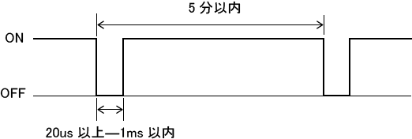
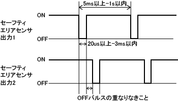
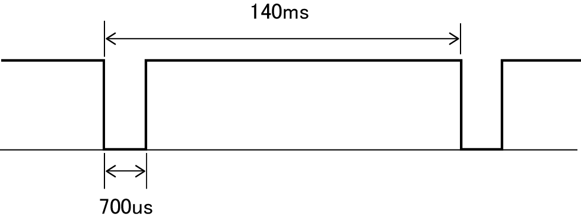
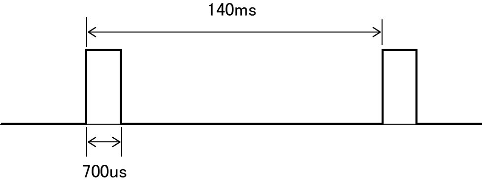
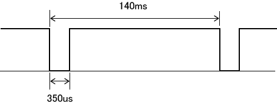
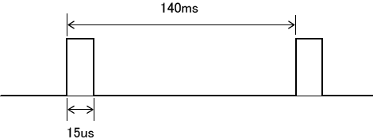
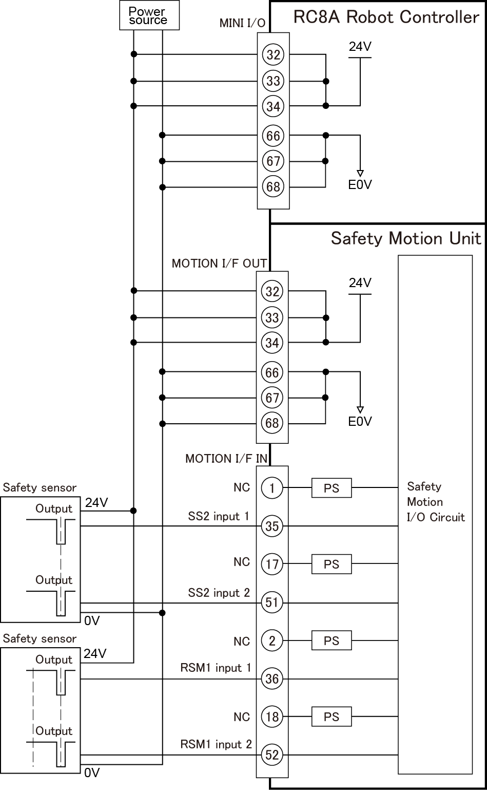

ID : 2842
ご使用前の注意事項
ここでは、セーフティモーションをご使用される前に知っておいていただきたい注意事項を説明します。
なお、ロボットコントローラのエンジンボード型式の違いにより、内容が異なる箇所があります。
安全にご使用いただくために
- セーフティモーション仕様では、安全柵無しに人とロボットが同じ空間で作業すること（協働作業）ができる安全機能が搭載されています。協働作業される場合は、設計されるロボットシステムのリスクアセスメント（労働安全衛生法第28条の2）を実施し、安全対策を施したうえで、人に及ぼす危険が十分低減できていることを確認してご使用ください。
- セーフティモーション仕様は、ロボットの位置や速度を監視し、ロボットが決められた範囲から逸脱したときにロボットを停止させるものです。ロボットに人体などの他の物が接触した時に、ロボットの力が自動的に制限される機能ではありません。
- セーフティライトカーテンなどの人体検出装置を設置する場合、以下の事に注意してください。
- 人体が検出領域に侵入し、危険部に到達する前にロボットが停止するために必要な最短距離(安全距離)がISO 13855等の規格により規定されていますので、その最短距離以上離れた場所で検知できるように人体検出装置を設置してください。
安全距離を算出する際は、ロボットの停止距離が動作速度により変化することを考慮してください。
ロボットの停止距離は、各ロボットの取扱説明書を参照してください。 - 危険部に対し、人体検出装置が設置されていない方向又は、検出範囲外からの人体接近に対しては、安全は保証されません。
安全柵を設けるなど、安全対策を実施して下さい。
- 人体が検出領域に侵入し、危険部に到達する前にロボットが停止するために必要な最短距離(安全距離)がISO 13855等の規格により規定されていますので、その最短距離以上離れた場所で検知できるように人体検出装置を設置してください。
既存機能への影響
RC8A(セーフティモーション)ロボットコントローラでは、RC8A(標準)ロボットコントローラに対し、「使用できなくなる機能」、「エラー検出される可能性がある機能」、「使用方法に制約が生じる機能」があります。詳しくは「既存機能への影響」を参照してください。
セーフティモーション特有のエラー
セーフティモーション特有のエラーを以下に示します。
購入後、初めてモータをONする時のエラー
購入後、初めてモータをONする時にソフトリミットオーバーのエラーが発生する場合があります。
これは、梱包時に軸をソフトリミット外に移動しているため起こるエラーですので、故障ではありません。以下のどちらかの方法で解除してください。
- モータのブレーキを解除してロボットをソフトリミット内に手で移動します。
- ソフトリミットオーバーのエラーが発生していても、ロボットをティーチングペンダントまたはミニペンダントで動かせるよう監視無効入力パラメータを有効にし、監視無効入力信号をON(短絡)します。その後、手動モードでロボットをソフトリミット内に移動します。エラー解除後、監視無効入力信号を使用しない場合は、監視無効入力パラメータを無効に戻してください。
Mini I/OおよびMotion I/Oの電源に外部電源を使用しているときのエラー
Mini I/OおよびMotion I/Oの電源に外部電源を使用している場合、外部電源を供給せずにロボットコントローラの電源を投入したり、ロボットコントローラの電源投入より遅れて外部電源を供給すると、エラーが発生しロボットを動作させることができません。
ロボットコントローラの電源投入前に、外部電源が供給されるようにしてください。
Mini I/O、Motion I/Oの各信号との機器の接続について
Mini I/O、Motion I/Oの各信号との機器の接続については、以下のような特長や注意事項があります。
特長
自動イネーブル入力(Mini I/O)やSS1(Motion I/O)などの安全回路の信号は、基本的に接点（リレー接点、スイッチなどの接点）のみ接続可能ですが、次の入力信号はセーフティセンサの出力信号 (トランジスタ出力) を直接入力することもできます。(以下、「センサ接続可能入力」と呼称)
| ロボットコントローラのエンジンボード型式 | センサ接続可能入力 |
|---|---|
| N、7 |
|
| E |
|
例えば、SS2にエリアセンサの信号を接続し、エリアセンサが人体などの侵入を検知したら、ロボットを停止させるというシステムを組むことができます。
ただし、上記入力信号は、入力される信号が、"接点"なのか"トランジスタ出力"なのかを設定するパラメータがあります。ロボットコントローラ出荷時は入力される信号は"接点"に設定されているので、セーフティセンサを接続する場合は設定の変更が必要です。詳細は次の注意事項を参照してください。
注意事項
- Mini I/O、Motion I/Oに接続する機器は、リスクアセスメントを実施の上、設計する安全レベルに応じたものを選定をしてください。
- Mini I/O、Motion I/Oの電源は同じ電源装置から供給するようにしてください。
- センサ接続可能入力(「特長」の表参照)にセーフティセンサを接続する場合は以下の事に注意してください。
- 接続するセーフティセンサは以下に対応したものをご使用ください。
・安全認証されている
・出力がPNPオープンコレクタタイプ
・出力が2重化されている
・OFFパルスを出力する
・2重化出力のOFFパルスは重ならない
・出力が負論理(Lowレベルの時に機能する) - センサ接続可能入力の論理は負論理 (Lowレベルの時に機能する) です。セーフティセンサは出力信号が負論理のものをご使用ください。
- センサ接続可能入力は、接続されている機器が正常かどうかを確認するために、定期的にOFFパルス (Hightレベル状態中に瞬間的にLowレベルになる) が入力されるかどうかを監視しています。OFFパルスが入力されないと、エラーとなりますので、以下に示す仕様を満足するOFFパルスを出力するセーフティセンサを選定してください。
ロボットコントローラのエンジンボード型式 OFFパルスの仕様 N、7  E  - センサ接続可能入力の入力設定を変更する必要があります。WINCAPSIIIにて以下のパラメータを設定後、RC8Aセーフティパラメータツールで"監視に必要なデータ"をロボットコントローラに送信し、ロボットを再起動してください。
操作経路 : [プロジェクト(P)] - [パラメータ(T)] - セーフティ No. 名称 セーフティセンサ接続時の設定 28 エリアセンサSS2入力設定 セーフティセンサを接続する入力を"1:有効"にする。 29 エリアセンサRSM1入力設定 30 エリアセンサRSM2入力設定 31 エリアセンサRSM3入力設定 32 エリアセンサTOOL0入力設定(*) 33 エリアセンサTOOL1入力設定(*) 34 エリアセンサTOOL2入力設定(*) 35 エリアセンサTOOL3入力設定(*) 36 エリアセンサ監視領域0無効入力設定(*) 37 エリアセンサ監視領域1無効入力設定(*) 38 エリアセンサ監視領域2無効入力設定(*) 39 エリアセンサ監視領域3無効入力設定(*) 40 エリアセンサ監視無効入力設定(*) 41 エリアセンサSS1入力設定(*) 42 エリアセンサ基準位置確認入力設定(*)
(*)ロボットコントローラのエンジンボード型式が"E"の場合のみ - 接続するセーフティセンサの電源は、Mini I/O、Motion I/Oに供給する電源装置から供給するようにしてください。
- 各センサ接続可能入力に割り当てられている接続ピン数は4ピンです。これは、接点を2系統接続するために1系統につき2ピン使用するためです。セーフティセンサを接続する場合は、1系統につき１ピンだけ接続するため、残りのピンはOPENにしてください。
例えばSS2にセーフティセンサを接続する場合、割り当てられているピンは以下の4ピンです ("Motion I/O入力信号 ピン配列"を参照)。
端子 No. 名称 端子 No. 名称 1 SS2入力1-1 35 SS2入力1-2 17 SS2入力2-1 51 SS2入力2-2
この4ピンのうちセーフティセンサを接続するピンは、1系統目は端子No.35、2系統目は端子No.51です。端子No.1と17はOPENにします。
接続するピンの見分け方は名称で区別します。センサ接続可能入力の名称は以下のルールで表記されております。
信号名m-n
"m"が系統、"n"が系統内でのピンの区分けを表しています。セーフティセンサは"n"が"2"であるピンに接続してください。
具体例を"セーフティセンサの接続回路例"に記載しておりますので、そちらも参照してください。
- 接続するセーフティセンサは以下に対応したものをご使用ください。
- 安全回路の出力信号は、接続されている機器が正常かどうかを確認するためパルス (瞬間的に状態を反転する) を出力します。したがって、接続する機器は、パルスを出力されても誤動作しない機器を選定してください。
パルスを出力する出力信号の一覧とパルスの仕様は以下の通りです。
また、Motion I/Oの出力信号は、すべてPNPタイプの信号です。- パルスを出力する出力信号の一覧
信号名 コネクタ 信号タイプ 自動モード相互監視出力 Mini I/O NPNタイプ/PNPタイプ
(ロボットコントローラ購入時に選択)SOS出力 Motion I/O PNPタイプのみ SLP出力 RSM1出力 RSM2出力 RSM3出力 RPM出力 基準位置確認出力 - パルスの仕様
型式(*1)
出力信号 パルスの仕様 N、7 ON時(*2)  OFF時(*3)  E ON時(*2)  OFF時(*3) 
(*1)ロボットコントローラのエンジンボード型式
(*2)出力信号がON時にOFFパルス発生
(*3)出力信号がOFF時にONパルス発生
- パルスを出力する出力信号の一覧
セーフティセンサの接続回路例
以下に接続回路例を示します。
- 前提条件
- Mini I/O、Motion I/Oの電源は外部電源
- SS2、RSM1にセーフティセンサを接続
- 電源とセーフティセンサの接続回路例
 - 設定パラメータ
WINCAPSIIIの操作経路 : [プロジェクト(P)] - [パラメータ(T)] - セーフティ No. 名称 設定 28 エリアセンサSS2入力設定 1:有効 29 エリアセンサRSM1入力設定 1:有効 30 エリアセンサRSM2入力設定 0:無効 31 エリアセンサRSM3入力設定 0:無効
"監視に必要なデータ"を送信する際の注意事項
"監視に必要なデータ"をロボットコントローラに送信後、ロボットコントローラの電源をOFFする場合は、送信完了後、10秒待ってからOFFしてください。
10秒待たなかった場合、次回電源ON時にセーフティパラメータの転送が未完了だったことを伝えるエラーが出る場合があります。
エラーが出た場合は"監視に必要なデータ"をロボットコントローラに再送し、10秒待ってから電源をOFFしてください。
MC8A セーフティモーション仕様をご使用する際の注意事項
MC8A セーフティモーション仕様をご使用の際は、上記内容に加えて以下の内容にもご注意ください。
- Robot Position Monitoring (RPM)は使用できません。
Robot Position Monitoring (RPM)は使用できないため、監視領域無効入力を無効にする必要があります。
まずWINCAPSIIIで[プロジェクト(P)] - [パラメータ(T)]と操作し、セーフティパラメータのNo.11～14(監視領域0-3無効入力設定)を全て「0：無効」にし、プロジェクトを保存してください。その後、RC8Aセーフティパラメータツールでロボットコントローラに"監視に必要なデータ"を送信し、ロボットコントローラを再起動してください。 - WINCAPSIIIで監視領域を作成しないでください。
WINCAPSIIIで監視領域を作成し[監視領域データ出力]を行うと ("監視モデルの作成・保存"を参照)、RC8Aセーフティパラメータツールでプロジェクトを開く際にエラーが出ます。誤って[監視領域データ出力]を行ってしまった場合は、新規にプロジェクトを作成し直してください。
ID : 2842